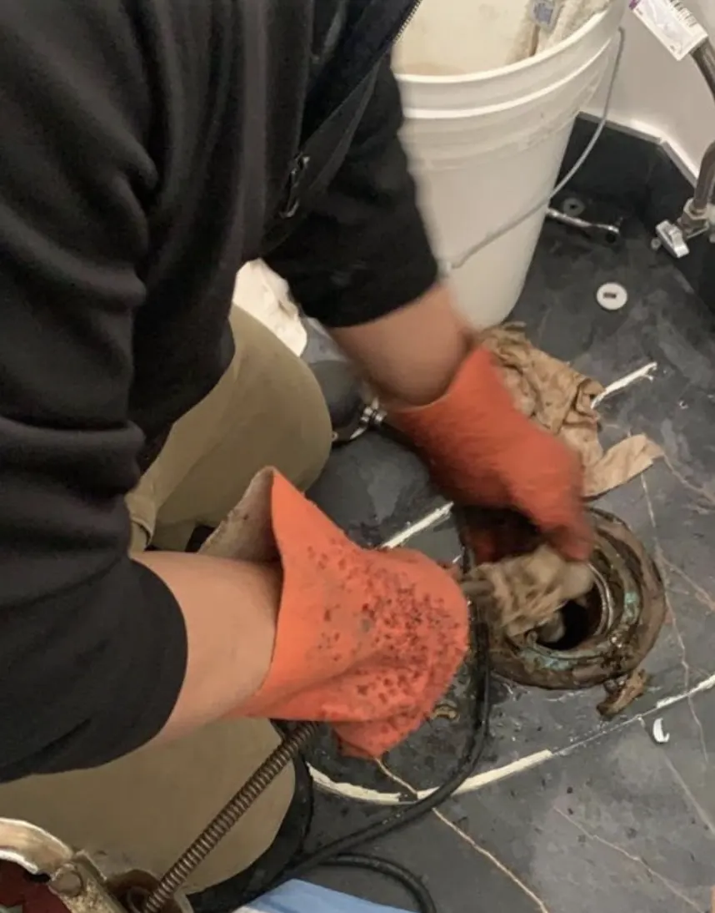
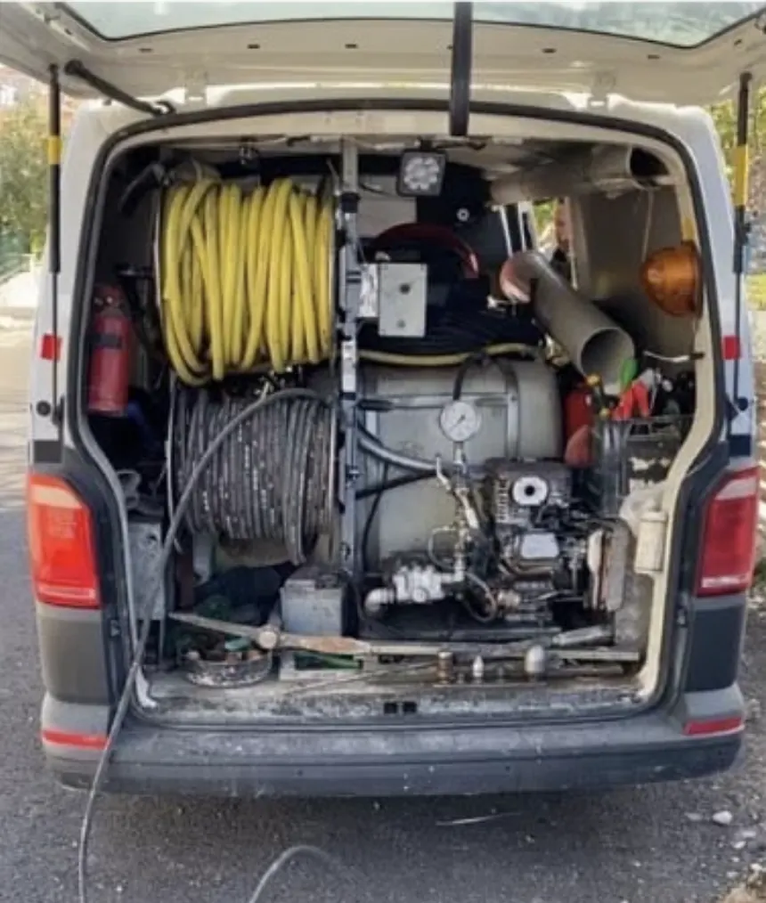

Kocaeli · 7 ilçe · 7/24
Kocaeli Tıkalı Gider Açma ortalama 30 dakikada kapınızda
Lavabo, mutfak ve banyo gideri, tuvalet tıkanıklığı ve taşan rögar için 7 gün 24 saat ulaşabileceğiniz ekibiz. Tıkanıklığın yerini gerektiğinde kamerayla görüp kırmadan açıyoruz; fiyatı işe başlamadan söylüyoruz.
- 7/24 hizmetGece, hafta sonu ve bayramda da arayabilirsiniz.
- Ortalama 30 dakikaKocaeli'de adrese ortalama 30 dakikada ulaşıyoruz.
- Kırmadan, kameralıTıkanıklığın yerini kamerayla görüp kırmadan açıyoruz.
- Fiyat işten önceUsta yerinde baktıktan sonra, işe başlamadan fiyatı söylüyor.
Hizmetlerimiz
Gider açma hizmetleri
Her hizmetin ilçenize özel sayfasında, o bölgedeki binalarda en sık karşılaştığımız durumları da anlattık.
 Tıkalı Gider AçmaLavabo, evye, duş, küvet ve balkon giderlerindeki tıkanıklığı kırmadan, makineyle açıyoruz.Ayrıntılar
Tıkalı Gider AçmaLavabo, evye, duş, küvet ve balkon giderlerindeki tıkanıklığı kırmadan, makineyle açıyoruz.Ayrıntılar  Tuvalet Tıkanıklığı AçmaKlozet, alaturka tuvalet ve tuvalet hattındaki tıkanıklığı kırmadan, klozeti sökmeden açıyoruz.Ayrıntılar
Tuvalet Tıkanıklığı AçmaKlozet, alaturka tuvalet ve tuvalet hattındaki tıkanıklığı kırmadan, klozeti sökmeden açıyoruz.Ayrıntılar  Rögar Temizleme ve AçmaTaşan rögarı açıyor, rögarı ve bahçe hattını yüksek basınçlı suyla yıkayıp tortudan arındırıyoruz.Ayrıntılar
Rögar Temizleme ve AçmaTaşan rögarı açıyor, rögarı ve bahçe hattını yüksek basınçlı suyla yıkayıp tortudan arındırıyoruz.Ayrıntılar  Kameralı GörüntülemeGider hattının içine kamera sokup tıkanıklığın yerini, sebebini ve borunun durumunu kırmadan görüyoruz.Ayrıntılar
Kameralı GörüntülemeGider hattının içine kamera sokup tıkanıklığın yerini, sebebini ve borunun durumunu kırmadan görüyoruz.Ayrıntılar Hizmet bölgeleri
Hizmet verdiğimiz ilçeler
İlçenizi seçin; o ilçedeki dört hizmetin sayfasına oradan ulaşabilirsiniz. Merkezimiz Başiskele'de.
Süreç
Nasıl çalışıyoruz?
- Arayın ya da yazınSorunu anlatın; mümkünse WhatsApp'tan fotoğraf ya da kısa video gönderin.
- Ekip yola çıksınAdresinize en yakın ekibi yönlendiriyoruz; ortalama 30 dakikada adresteyiz.
- Yerinde tespit ve fiyatUsta tıkanıklığın yerini gerekirse kamerayla görüyor, fiyatı işe başlamadan söylüyor.
- Kırmadan açma ve kontrolGideri makineyle açıyor, akışı birlikte test ediyor, ortamı temiz bırakıyoruz.
Sahadan fotoğraflar



Sık Sorulan Sorular
Hangi ilçelere hizmet veriyorsunuz?
Kocaeli'de İzmit, Başiskele, Gölcük, Derince, Körfez, Kartepe ve Karamürsel ilçelerine geliyoruz.
Gece ya da hafta sonu ulaşabilir miyim?
Evet. 7 gün 24 saat hizmet veriyoruz; telefonla arayabilir ya da WhatsApp'tan yazabilirsiniz.
Usta ne kadar sürede gelir?
Ekiplerimiz adrese ortalama 30 dakikada ulaşıyor. Trafik ve iş yoğunluğuna göre süre değişebilir; arama sırasında size tahmini süreyi söylüyoruz.
Gider açarken kırma yapılıyor mu?
Hayır, tıkanıklığı gider ağzından makineyle açıyoruz. Gerektiğinde hattın içini kamerayla görüyoruz; kırma ancak boru kırılmış ya da çökmüşse gündeme gelir ve bunu önce görüntüyle size gösteriyoruz.
Fiyatı ne zaman öğrenirim?
Fotoğraf ya da videoyla yaklaşık bilgi verebiliyoruz. Kesin fiyatı usta yerinde baktıktan sonra, işe başlamadan önce söylüyor.
Gideriniz mi tıkandı?
7/24 arayabilir ya da WhatsApp'tan yazabilirsiniz. Ortalama 30 dakikada adresinizdeyiz.